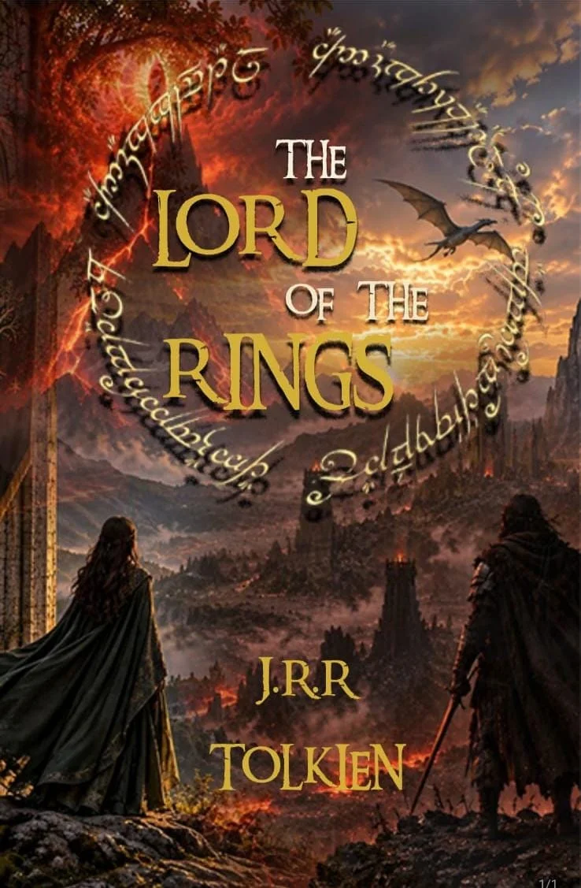
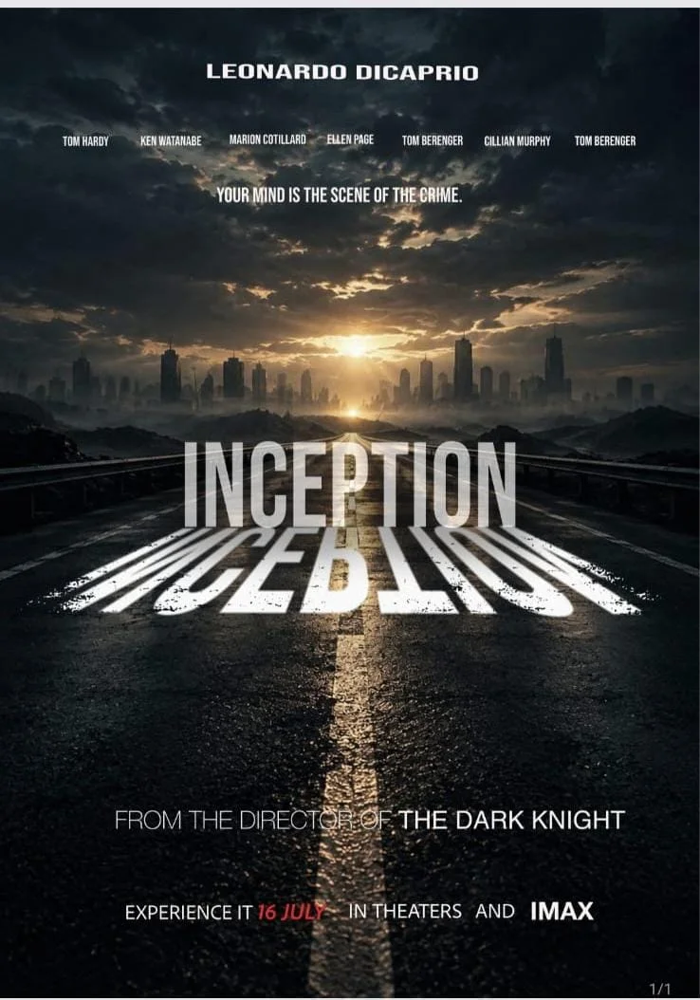
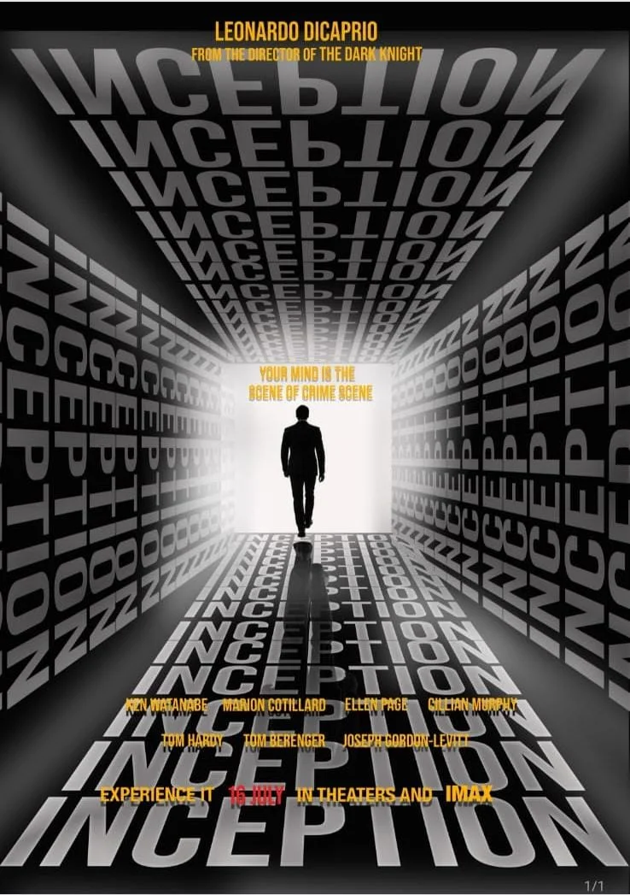

GRAPHICS / ADOBE PHOTOSHOP
Stories Between
the Letters.
A poster study exploring the relationship between typography, colour, composition, and cinematic mood.



01 / READ THE COMPOSITION
Type does more
than name a story.
The three pieces offer different ways to use lettering as part of an image. Here, the emphasis is on what can be seen in the finished compositions.
A ring as a focal point
In the Lord of the Rings piece, circular script surrounds the gold title. The warm landscape and smaller figures create a contrast in scale.
A title with depth
In the first Inception piece, the white title extends across the road. In the second, repeated lettering constructs a tunnel around a small silhouette.
Hierarchy through contrast
Gold and yellow accents contrast with dark imagery. Large title type leads the composition, while smaller credits sit lower in the hierarchy.
02 / WHAT I’M EXPLORING
Mood, hierarchy,
and legibility.
This work began as an exploration of how typography and colour can change the mood of a poster. The complete compositions are shown here so the framing, typography, and credits remain visible.
A useful next iteration would compare alternate layouts at thumbnail size: is the title still legible, and does the focal point remain clear?
Project context: these are poster studies referencing existing film and literary properties. They are not presented as commissioned campaign work. Underlying source-image and typography credits should accompany the original working files.